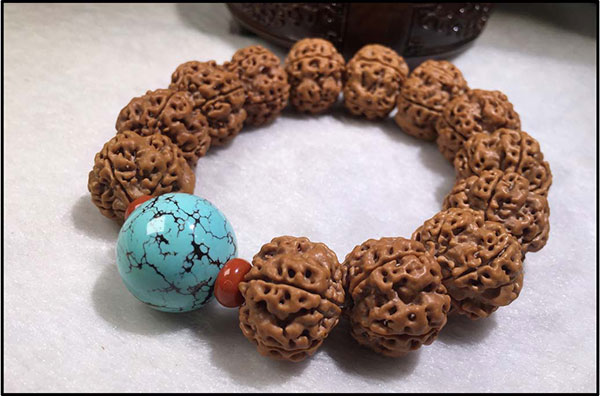
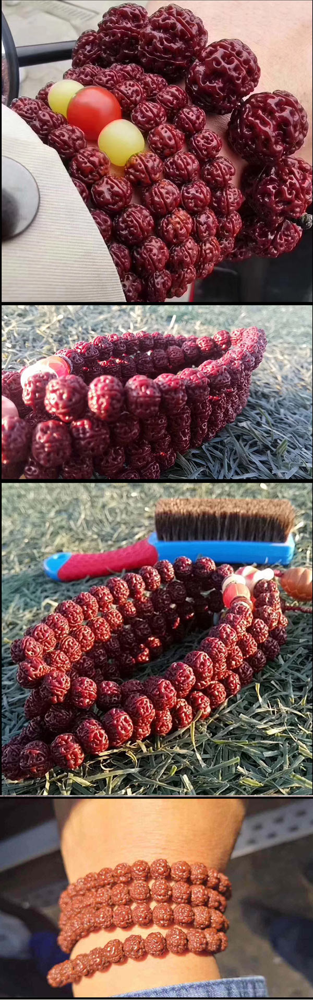

在我看来，今天能看到这篇文章的你无疑是幸运的，因为本文浓缩了我混迹文玩圈十年才总结出来的宝贵心得与经验，如果你能静心通读的话，相信你会受益匪浅。
要知道在鱼龙混杂的文玩圈，如果没有足够的知识储备，你可能花了大价钱却只能买到品质低劣，毫无收藏价值的金刚菩提。早在2010年，我刚开始盘玩金刚菩提那会儿，没有微信、没有微博，互联网上都很难找到关于金刚菩提的科普文，于是对金刚菩提一知半解的我被一些无良商家用各种树脂金刚、落地红等假金刚骗了三万多元，买了一堆只能扔掉的垃圾货。现在想起这些冤枉钱，也只能怪自己没有提前做好功课，算是花钱买了教训。
自此，我开始潜心学习金刚菩提的相关知识，了解其生产工艺，研究其历史底蕴，总结其辨别方法，在用知识武装自己的同时，也开始在网上发表一些金刚菩提的科普文。一方面是为了分享经验，让刚入坑的萌新避免和我一样走弯路，另一方面就是希望拓宽自己的文玩圈子，认识更多志同道合的玩友，大家一起鉴赏和交流，人生如此，夫复何求！
我在10年第一次接触到金刚菩提，带着一份对文玩的热爱和追求，在14年组建了自己的团队.
大贝文玩创立之初的目的就是让所有爱好文玩的人买不到假货！大贝文玩一直坚持做客户认可的产品，用产品的品质去打动客户。宁可不做，不卖假货。
在不知该如何对比和下手之前，请各位玩友一定耐心看完之后的【黑幕揭秘】
1首先来说说一些常见的作假手段：做旧，拿油熬，拿油炸，借助做旧工艺，可弄出很多黑且光亮的金刚。上色，可以通过各类上色手法上色。上漆和其他化学试剂。使得金刚本身变得很好看。
2其次是使用替代物。目前国内所见二瓣几乎无真，三瓣很多都是用长寿核桃代替。 用印度籽；印尼籽；国产籽冒充尼泊尔籽。尤其是在多瓣领域，假的简直离谱。树脂塑料等物品代替

3在挑选时摸手感：菩提子多为草籽或者树籽，所以表皮未经抛光之前比较粗糙，天然的果实外层摸起来会比较扎手。看纹理：天然菩提子会有各种不同的外形纹理。
现在市场上充斥各种假货，看着让人眼花缭乱，以落地红最为常见。我就以怎么辨别落地红做为例子讲解！
1 圆。其实金刚只是略接近圆,本身其实是椭圆的。
2 多七瓣八瓣。落地红也分瓣,否则没法鱼目混珠,但以七八瓣常见。
3 瓣线分布均匀。落地红的瓣线分布几乎如同是尺子丈量出来的一般,规整的吓人。
4 纹路密集。落地红的纹路细分之下有两种,一种是锯齿状如同蜂窝一般,另一种则如同蚂蚁洞一般的密集。
5 大尺码。落地红的尺码太大了,可能是25MM到35MM 都有,这简直就超出了金刚菩提的最大极限。
金刚菩提想要盘玩出非常好的效果，那么挑选是非常重要的一个选择，金刚菩提的品相不好，密度不够好，下再大的功，也不能盘玩出好的效果，所以，挑选是非常重要的，那么怎么挑选金刚菩提呢，从五个方面入手 ，分别是密度、皮质、纹路、桩型和瓣数。
密度：— —密度高的金刚籽都会沉水，浮出水面上的一般都是糠籽和坏籽，密度低。
皮质：— —金刚菩提的皮质分成黄皮金刚和红皮金刚！红皮变色快易上手变化明显但是后期容易发紫发黑！黄皮难变色想要速成的不建议选择，但后期颜色嫩红玉化效果强

纹路：— —壁厚有肉，肉很厚实，肉度分布不均，呈不规则的排列方式。
桩型：— —金刚菩提的桩型主要分成三种，一种高桩，一种矮桩，一种圆桩，型的选择根据个人的喜好，并不会影响最终的盘玩效果。
瓣数：— —金刚菩提以五瓣最为普通，四瓣和六瓣略比五瓣少一些，而其它更多瓣的，那就是稀少中的稀少。
五瓣的金刚能给家中创造平静的环境，保持平和的心态。
而六瓣的金刚菩提子可以财源广进，生意兴隆。
尼泊尔90%以上的金刚都是五六瓣。瓣数越多越稀少，7瓣以上通常称之为多瓣，8-14瓣在多瓣中比较常见，14瓣以上就非常罕见了。
随着近两年金刚菩提需求激增，这促使商家利用坑蒙拐骗的手段来忽悠金刚爱好者。 在没有学会辨别金刚真假以及它的市场价值之前，请不要盲目购买！
随着市场需求不断激增，一部分玩家刚刚入门就喜欢入手尺寸大的 金刚，瓣数多的金刚，这让不良商家有机可趁！某宝充斥着这种落地红 ，价格低，又漂亮，但是密度很低，玩玩就裂！很多新手都花钱买当受！
对于金刚的定价，仅凭某一个人的经验去定价是不科学也是最不合理的，误差很大。因为人总有感性或判断不准备的时候，定价多少都会有所偏差。
究竟什么是好金刚，好金刚其实不一定非得价格高，只要皮质密度好，整体统一（包含尺寸桩型皮色肉度）无缺陷，坚持盘下来都是精品，都会很漂亮。早两年都从柴纹开始玩起，我见过很多肉度一般但已经包浆刮瓷的串儿，一点都不逊色。
其实像文玩金刚的定价是没有一个绝对的标准，价格都只是相对的，因为每一颗每一串都是独一无二的。好金刚的确是可遇不可求。参考整个市场的一个行情和动向。中低端市场相对平稳合理，至于高端市场，由于精品籽的稀缺性和市场的需求，导致价格一直处于居高不下。
(微信号： ←长按复制）
拍几张图片或者一个小视频让我帮你看看金刚好坏我保证一定帮你看！
金刚菩提能够展现给各位也是我的一种善缘。如果有需要鉴定的，我会帮您免费鉴定
金刚菩提初期盘玩要遵循“7 分刷、3分盘”，刷是保持清洁、抛光的作用，盘自然就是上色。盘到一定时期后可以改为“3 分刷、7 分盘”，金刚本身的特点容易藏污纳垢，所以盘玩需要不断的用刷子清洁，这时可以选择硬毛刷常刷。金刚上色最快的是“粗纹”、“细纹”稍慢、“齿纹”最慢。菩提盘玩时遵循“夏天上色、冬天上光”的道理。
金刚菩提如何清理
金刚菩提带有果肉残渣，到手后至少需要准备以下几个工具：
①钢丝刷（这个属于清理利器，一定要有哦，不然会更费事。要记住是钢丝刷不是钉耙）
②硬毛刷（进一步清理、盘玩的工具）
③钢针钩（顽固地方清理工具，钢针、钢钩）
大贝文玩认为盘玩是循序渐进的事情，切忌急功近利，小心适得其反。盘玩方法因个人喜好不同会有明显不同的差异。每位玩友都期待着自己的金刚会慢慢变得红润通透。因为篇幅所限还有很多问题比如：
金刚菩提返碱如何清理？
金刚菩提上油好不好？
金刚菩提怎样盘的红润？
1严选良材
为了能够真正从源头上把控产品质量，保障为顾客提供全程可溯源的高品质产品，大贝文玩所有原材料都是直接向尼泊尔原产地的农户种植基地实地采购，其中品质优越的，才有机会被挑选制成大贝所属精品文玩。
2传承匠心
坚守传统工艺，秉承匠心品质，大贝文玩的每一件产品都历经了十余道工序打磨，无论是自然晾晒，还是去壳、打孔和质检，都讲究纯手工。这是机械化所无法比拟的，文玩师傅要的不是过程上的快捷，而是守住寂寞，用心用情打磨每一个细节，追求艺术层次的突破。
3量身定制
文玩的原材料均取自于天然矿石和植物种果，可谓聚天地之灵气，取日月之精华。这就注定了文玩的浑然天成与不可复制，每一件文玩都是独一无二的。大贝文玩拥有专业的设计师团队，一对一与顾客沟通，根据顾客的身份、年龄、性别及喜好，量身打造其专属文玩，完美满足不同顾客对时尚、个性和品味的追求。
4配送售后
大贝文玩为了能让宝贝能更快、更安全地送到顾客手中，我们优先选择顺丰速递、圆通速递作为合作伙伴，并且承诺有任何品质问题包退换。如果客户有需要，我们还可以代顾客送至国家权威机构检测，并出具检测报告，保证顾客在大贝文玩的每一个环节都能享受顶级服务。
现在大贝的文玩圈已经有了近万名玩友，我们经常在一起交流探讨盘玩心得，这个圈子每天都有萌新加入，而我都会为他们答疑解惑，他们通过知识武装自己，都具备了辨伪存真的能力。相信只要我们努力充实自己的知识储备，不轻信那些骗子和不良商家，终能找到属于自己的天命之串！
期待大家早学会知识！

版权所有：
免费辨别金刚和领取《金刚菩提手册》